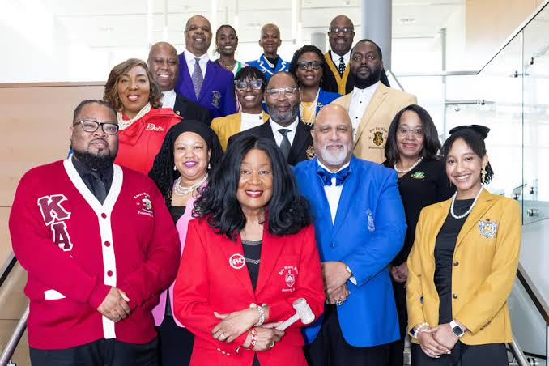

Organization History
Learn when and where each organization was founded and how it developed.
Explore the history, leadership, and service of the nine organizations.
The Divine Nine refers to the nine historically Black Greek-letter organizations that make up the National Pan-Hellenic Council. These organizations have contributed to scholarship, leadership, community service, and civil rights throughout American history.
This website allows visitors to explore the organizations, learn about their founding, and understand their lasting impact.
Explore the Divine Nine
Learn when and where each organization was founded and how it developed.
Discover how these organizations promote education, leadership, and community involvement.
Find additional resources about the National Pan-Hellenic Council and its member organizations.